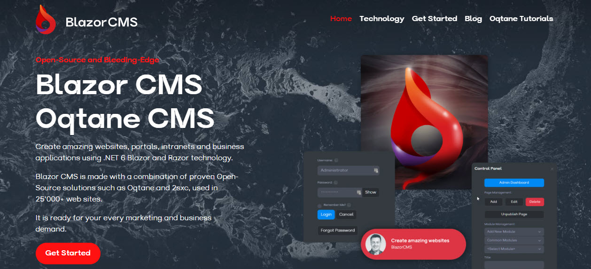

Oqtane Themes Guide
Oqtane Themes are extensions to customize the look and feel of your Oqtane website. This guide will help you get started with creating and using themes in Oqtane.
A theme is a collection of files that define the look and feel of your website. Themes can include CSS, JavaScript, images, and other assets that are used to style your website. Here's an example:
Next Steps
- Learn to Install a theme
- Set the theme to use on a site or on a specific page
- Configure theme settings (not documented yet)
- Develop your own Oqtane Theme
Main Author

Daniel Mettler, @iJungleboy [MS MVP, Oqtane Core Team]
Content Management Expert, Chief Architect of 2sxc and cre8magic.
Forged in the jungles of Indonesia, lives in Switzerland , loves Oqtane 🩸 & 2sxc 💜.
LinkedIn | Discord: @iJungleboy | Twitter: @iJungleboy